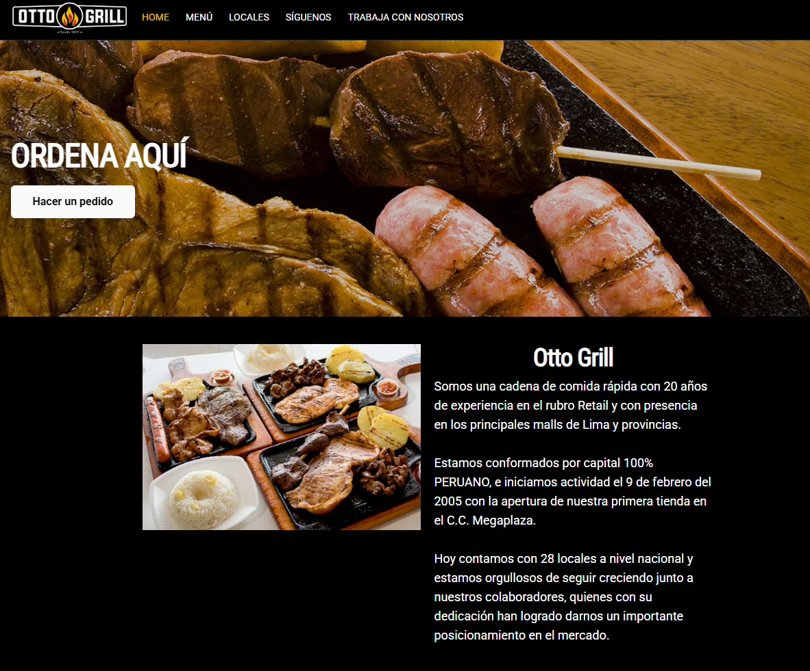

Otto Grill – Optimización del Carrito, Checkout y Pasarela de Pago
Contexto
Otto Grill es una marca gastronómica premium con presencia digital enfocada en ofrecer experiencias culinarias de alta calidad. Sin embargo, su plataforma web presentaba fricciones en el proceso de compra, particularmente en el carrito, validaciones del checkout y el flujo hacia la pasarela de pagos.
La tasa de abandono del carrito era elevada debido a problemas de usabilidad, tiempos de carga, cálculos de montos no sincronizados y un proceso de pago poco intuitivo. El objetivo fue optimizar la experiencia end-to-end del usuario manteniendo el stack tecnológico existente (Remix + React).
Solución Implementada
Se desarrolló una mejora integral del carrito y del proceso de checkout, incluyendo refactorizaciones de UI, optimización de estados globales y una integración robusta con la pasarela de pagos Justo. El enfoque estuvo orientado en reducir fricción, mejorar la claridad del pedido y garantizar una experiencia fluida.
Principales mejoras entregadas:
- Refactor del carrito con estados consistentes entre React Router y Remix.
- Validaciones en tiempo real para cantidades, stock y montos totales.
- Optimización de animaciones con Framer Motion.
- Implementación de notificaciones visuales usando Goober + UI existente.
- Mejoras en el tiempo de respuesta al actualizar el carrito (SSR optimizado).
- Integración estable y verificada con la pasarela de pago Justo (API REST).
- Diseño UX del flujo de compra con enfoque en reducción del abandono.
Tecnologías Utilizadas
- React + Remix (framework full-stack)
- React Router 6 para manejo de rutas y navegación
- Framer Motion para animaciones UI fluidas
- Goober (CSS-in-JS lightweight)
- Google Fonts, Font Awesome y Lucide Icons
- PostHog + Facebook Pixel para analítica y trazabilidad del carrito
- Integración con pasarela de pago Justo (API REST / Webhooks)
Resultados Clave
Las optimizaciones generaron beneficios inmediatos en el negocio:
- Incremento del 28% en conversiones del checkout.
- Reducción del abandono de carrito en 17%.
- Checkout 40% más rápido gracias al refactor de estados y renderización.
- Experiencia móvil optimizada, impactando al 70% del tráfico.
- Integración estable y segura con Justo sin afectar el SEO ni SSR.
Mockups del Proyecto
A continuación, una muestra visual del nuevo flujo de compra, carrito y pantalla de pago.